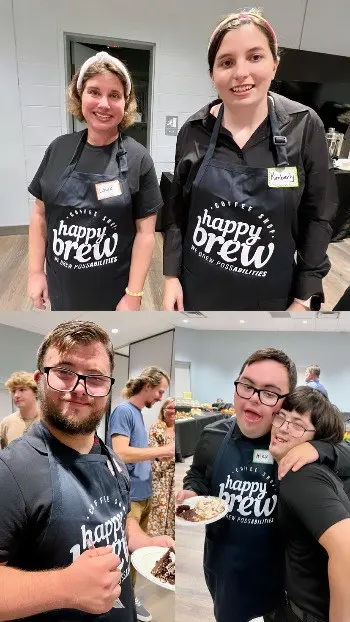
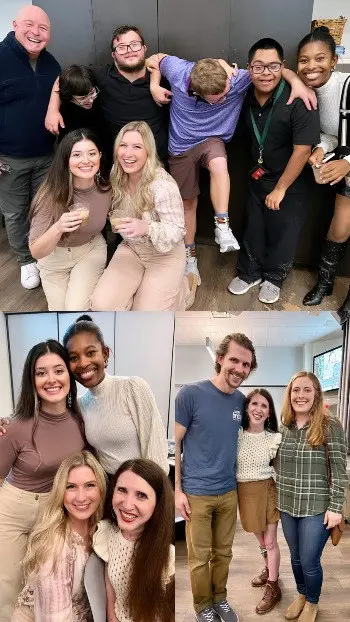

Last month I had the privilege of speaking at our fundraising event alongside one of my good friends and Happy Brew's occupational therapist, Sally Mackay. The fundraiser was truly a magical night filled with so much love, joy, and hope. Hope is what stuck out to me the most that night. The light that flickered in each one of our employees’ eyes of hope for the future, the hope for what Happy Brew has to offer was significant. When it comes to employment, hope is not the first word that comes to mind for people with disabilities. The reality is that the world was not made with people with disabilities in mind especially when it comes to accessibility and employment; or even more so accessibility in the workplace.

Accessibility and inclusion for all is what sets Happy Brew apart from the rest of the community. Happy Brew is a safe place for all abilities; whether intellectual, physical, hearing or visually impaired, or able-bodied, every person has a seat at the table. Happy Brew is unique in that it offers a universal design meaning no matter a person's ability it will be completely accessible to meet the individual's needs and wants. Inaccessibility creates a huge barrier whether the individual seeks employment or wants to visit the establishment. Ultimately when places are not accessible or accommodating for people with disabilities it sends the message, “you don't belong here.”

I have grown up with varying levels of disability from a traumatic car accident when I was a child. I know what it is like to be able bodied. I know what it is like to be a wheelchair user, and I know what it is like in the in-between. More than that I know what it is like to not feel seen; to not feel like there is a place I belong or fit in. Happy Brew is a place, for employees and visitors alike, of love and acceptance for all abilities. At the end of the day all human beings desire to be loved and accepted as they are. Accessibility offers Hope - a way in. A way to be seen. A way of belonging. I desire that Happy Brew becomes a source of hope for the hopeless; for those that do not feel heard, seen or known. For those who feel like they “don't have a seat at the table.”
So come on in, pull up a chair, and grab a cup of coffee. You are welcome here, just as you are.